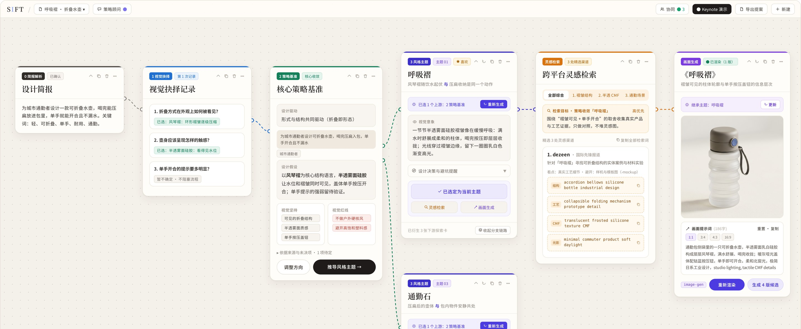
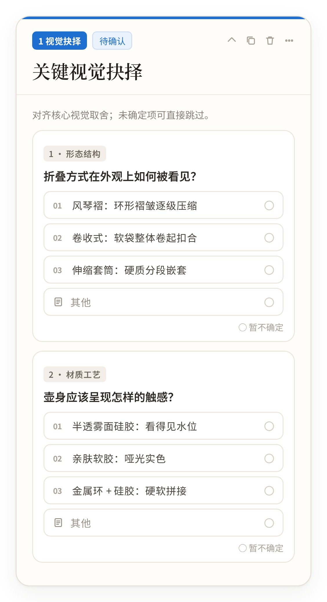
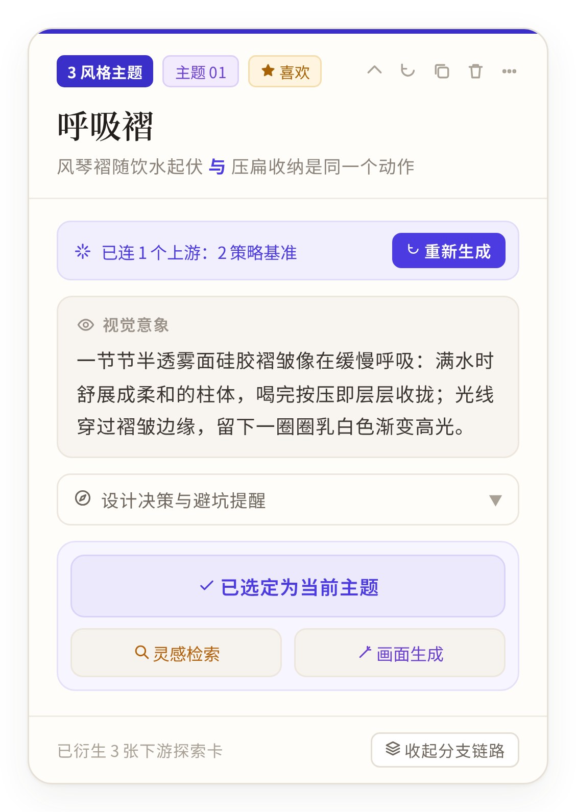
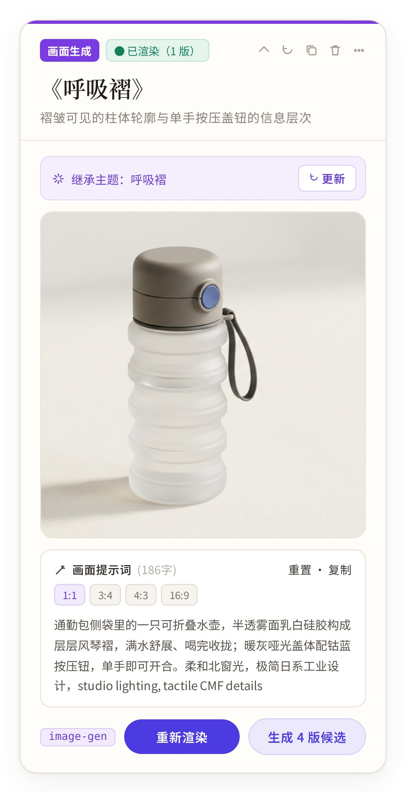
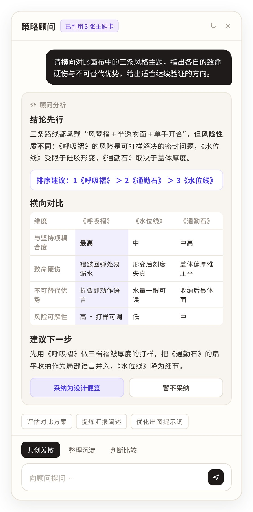

作品SIFT视觉策略收敛智能体
不急着出图，
先帮设计师想清方向。
给设计师用的 AI 智能体：把一句模糊的 Brief，收敛成说得清来由的视觉方向。
- 项目性质
- 课程项目 · 组长（3 人小组）
- 我的角色
- 产品定义、交互设计、原型开发；2 位队友提供建议与资料
- 时间
- 2026.09 – 10 · 4 周
- 工具
- AI 编程工具 · Next.js · React Flow · DeepSeek
一分钟速览
- 4 周把 PRD 从 v1.0 迭代到 v4.0，定位从“出图 AI”收敛为“判断搭档”。
- 提问从开放式问卷，改成每轮 2–3 道对立选择题。
- 终期 6 位新参与者测试：非设计师也能看懂方向的来由。
01问题
设计师缺的不是图，
而是“先判断什么”的次序。
拿到模糊 Brief，常见 AI 工具直接给效果图。可前期真正要回答的是：最大的不确定在哪，方向从哪来。我们归纳出四个断层：
- 意图模糊
- 生图幻觉
- 搜图无序
- 决策不收敛
02关键判断
AI 负责提问和记录，
设计师负责拍板。
导师评审时说“找图本身并不占优势，画布式对设计师团队更友好”。于是我把提问从问卷改成抉择：选项对立，可以跳过，回答即留痕。
早期 · 开放式问卷（重绘）
- 1. 请问您希望这款产品在整体上呈现出怎样的风格与气…
- 2. 在材料选择方面，您是否有特别偏好或需要避免的…
- 3. 关于目标用户的年龄层、使用习惯以及…
- 4. 您对色彩方案是否有初步设想，比如…
- 5. 是否需要考虑品牌调性与现有产品线…
随机 1–5 题 · 平均题干 40+ 字
题干长、无选项，设计师得自己组织答案。
现在 · 对立选择题（可点选）
1 视觉抉择待确认
关键视觉抉择
对齐核心视觉取舍；未确定项可直接跳过。
→ 写入视觉抉择记录
每轮 2–3 题，可选“暂不确定”，回答即写入记录。
03设计
一张画布：从 Brief 到方向，
每一步都可追溯。
六张卡片连成推演链，每张卡写明继承自哪一步、吸纳了哪次选择、避开了哪些禁忌。





—取舍
我删掉了什么
长篇策略方案测试中没人读完，改为每轮只问 2–3 个关键问题生图、打样字段会被当成出图工具，画面只留作辅助判断多个 AI 对话框确认过的判断找不回，交互全部收进画布卡片
04结果
流程看得懂了，
非设计师也能参与。
中期测试的问题集中在文字多、流程长；终期测试中，参与者反馈流程关系更清楚，参考证据也回到了画布上。
- 4 周PRD v1.0 → v4.0
- 100+次代码提交
- 6 位终期测试新参与者
“我不是设计师，但现在能理解为什么从 Brief 走到这个方向，也知道该怎么给反馈。”
JWY · 产品经理，终期测试参与者